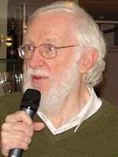
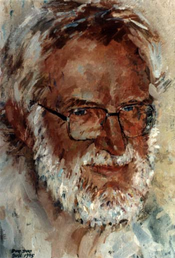
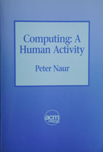

Peter Naur
Peter Naur is geboren op 25 oktober 1928 in Frederiksberg, Denemarken. Hij is op 3 januari 2016 overleden in Herlev, Denemarken.
Peter Naur was een van de eerste mensen die belangrijk was voor de informatica.
Hij heeft bijvoorbeeld bijgedragen aan het bedenken van de BNF-notatie, Backus-Naur-formalisme. Daarom is een deel van deze naam naar hem vernoemd.
De BNF-notatie wordt gebruikt voor de officiële beschrijving van de syntaxis van de meeste programmeertalen.
Naur heeft nog meer dingen gedaan die belangrijk zijn voor de informatica,
bijvoorbeeld de ontwikkeling van de programmeertaal Algol 60.
Algol is een reeks programmeertalen die heel invloedrijk zijn.
Deze programmeertalen zijn ontworpen tussen 1958 en 1973.
Algol is de afkorting voor Algorithmic Language.
Algol is bedacht om programmeertaal voor mensen eenvoudig te maken.
Het moest aansluiten op de gebruikelijke wiskundige notatie en de talen zoals Engels of Nederlands.
Dit streven om programmeertaal makkelijker te maken is mislukt, deze programmeertaal is er uiteindelijk niet gekomen, maar er zijn later wel ideeën van Algol toegepast in programmeertalen.
Biografie
Peter Naur is zijn carrière begonnen als astronoom.
Toen hij in aanraking kwam met computers veranderde hij van beroep.
Van 1959 tot 1969 zat hij bij de Regnesentralen, een Deens computerinstituut.
Daarnaast gaf Peter Naur colleges aan het Niels Bohr-instituut en de Technische Universiteit van Denemarken.
Van 1969 tot 1998 was hij professor aan de universiteit van Kopenhagen.
Naur heeft vooral bijgedragen op het gebied van ontwerp, structuur en prestaties van computerprogramma’s en algoritmes.
Daarnaast was hij bezig met software engineering en software architectuur.
Peter Naur heeft ook een boek geschreven: Computing, A Human Activity. Dit boek heeft hij in 1992 geschreven.
In zijn boek is een verzameling van zijn bijdragen aan de informatica verwerkt.
In 2005 kreeg Peter Naur de Turing Award.
Deze kreeg hij voor zijn werk voor Algol-60 en in het bijzonder voor zijn rol als redacteur van het Report on the Algorithmic Language Algol 60, waarin voor het eerst gebruik werd gemaakt van BNF.
|  |  |  |
| Peter Naur | Portret van Naur | Computing, a Human Activity |